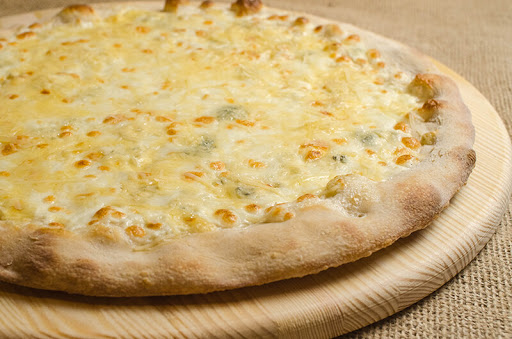
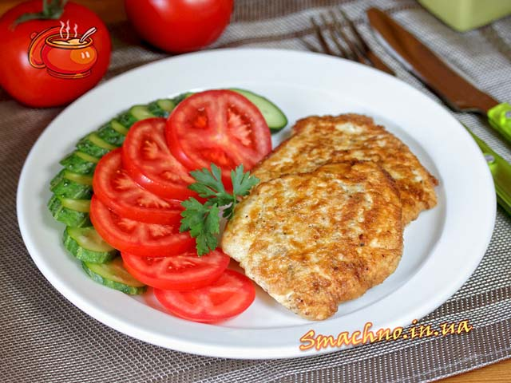
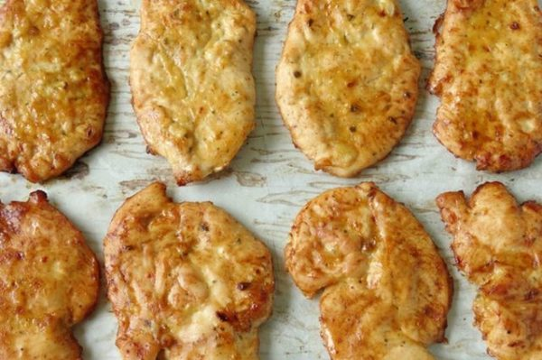

Улюблені страви
Піцца 4 сири
Компоненти
- 2 стакана борошна
- 1 стакан молока або води
- 5 гр сухих дріжджів
- 3 ст.л. оливкового масла
- 2 ч.л. цукру
- Сіль
- Моцарели 100 гр
- Пармезану 100 гр
- Емменталя 100 гр
- Горгонзоли 100 гр
- 5-6 лист. базиліка
- Чорний перець в молотому складі
Фото

Рецепт
- Сію борошно, щоб в подальшому наситити її киснем, так піца буде повітряної і ніжніше. Додаю цукор, сіль, дріжджі. Збиваю курей. яйце, додаю оливки. масло і молоко (потрібно використовувати тільки в теплому вигляді).
- Виливаю суміш в борошно. Роблю заміс. Тісто буде м’яке, але не повинно прилипати до долонь. Залишаю на годину в стороні дріжджовий склад.
- Формую основу на піцу (5-7 мм по товщині). Викладаю її на деко, мажу оливки. маслом і роблю кілька надколів виделкою.
- Ріжу сири на кубики або тру на тертці. Кладу потім шарами: м’який, голубий, ароматний, тв. сири. Приминаю масу долоньками. Засинаю начинку приправами.
- Ось і все, залишилося тільки відправити випікатися в духовку. Приблизно 20 хв. і корж почне набувати рум’яний відтінок. Коли піца буде готова, потрібно прикрасити її парочкою листочків базиліка.
Курячі відбивні
Компоненти
- Куряче філе 600 г
- Яйця (маленького розміру) 2 шт.
- Сметана 1 ст. л.
- Борошно 2 ст. л. з вершком
- Сіль
- Чорний мелений перець
- Соняшникова олія для смаження
Фото


Рецепт
- Куряче філе нарізати на порційні шматки.
- Щоб при відбиванні куряче філе не прилипало до дошки і молотка, грудинку слід змочити у воді і помістити в чистий поліетиленовий пакет, після чого філе злегка відбити.
- Відбиті шматки філе з обох боків посолити і поперчити.
- В посудину розбити яйця, додати сметану, посолити, поперчити і збити вінчиком до однорідної маси.
- На окрему тарілку висипати трохи борошна.
- Кожен шматок грудинки добре запанірувати в борошні з обох боків.
- Після чого обмакати в яйці і викласти на сковорідку з добре розігрітою олією. Смажити на середньому вогні до рум’яної скоринки, приблизно по 5 хв. з кожного боку.
- Курячі відбивні готові.